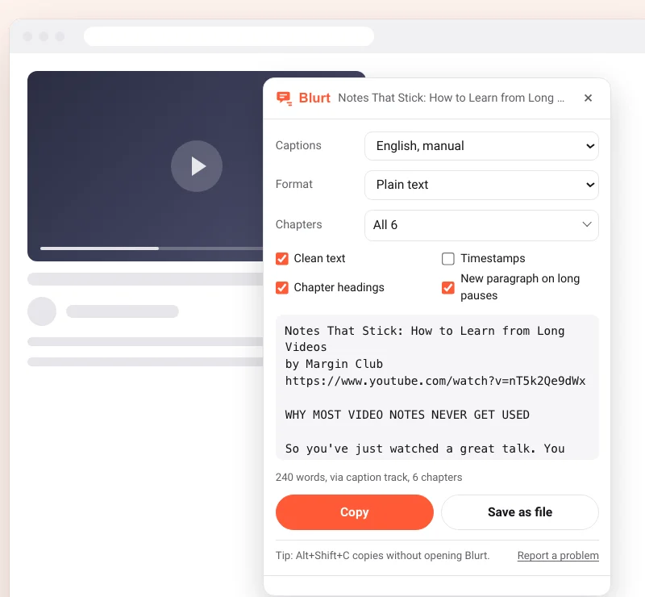
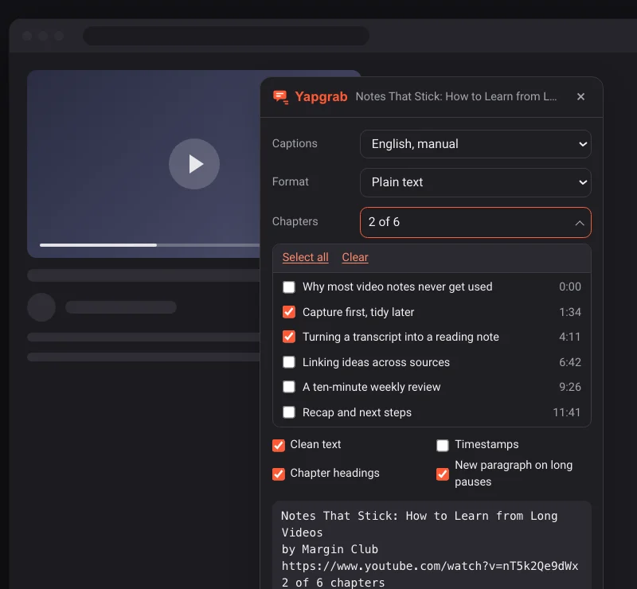

Ask an AI
Paste clean paragraphs into ChatGPT, Claude or any other AI tool, without the caption clutter.
Yapgrab is a Chrome extension that turns a video's messy captions into clean, readable paragraphs. One click, right in your browser. No account, no tracking.
Yapgrab is free. The waitlist is for Yapgrab Pro, which comes later. We only write to tell you when it is ready.
WHY MOST VIDEO NOTES NEVER GET USED
So you've just watched a great talk. You nodded along, you even paused it to write something down. And a week later, you cannot remember a single thing it said. That's not a memory problem. It's a capture problem. Video is great for watching and terrible for finding things again.
An invented sample video. Flip the switch to see the before and after.
Paste clean paragraphs into ChatGPT, Claude or any other AI tool, without the caption clutter.
Markdown with the title, link and date, ready for Obsidian or Notion.
Switch on timestamps to find every line again in the video.
Clean text
Captions are built for the screen: short fragments, split mid-sentence, with sound tags and repeated lines. Clean text mode turns them into something you can read, quote and paste.

Five formats
Plain text for AI tools, Markdown for notes, SRT and WebVTT for subtitles, JSON for code.
Notes That Stick: How to Learn from Long Videos by Margin Club https://www.youtube.com/watch?v=nT5k2Qe9dWx WHY MOST VIDEO NOTES NEVER GET USED So you've just watched a great talk. You nodded along, you even paused it to write something down. And a week later, you cannot remember a single thing it said. ...
Paragraphs and nothing else. Paste it straight into an AI tool, an email or a document. Timestamps are there if you switch them on.
--- title: "Notes That Stick: How to Learn from Long Videos" channel: "Margin Club" url: "https://www.youtube.com/watch?v=nT5k2Qe9dWx" video_id: "nT5k2Qe9dWx" date: "2026-10-02" language: "en" captions: "manual" extracted_at: "2026-11-19T10:00:00.000Z" --- # Notes That Stick: How to Learn from Long Videos ## Why most video notes never get used So you've just watched a great talk. You nodded ...
Obsidian-ready. Frontmatter with title, channel, link, date and language, and the video's chapters as headings.
1 00:00:04,000 --> 00:00:07,000 So you've just watched a great talk. 2 00:00:07,000 --> 00:00:10,000 You nodded along, you even paused it 3 00:00:10,000 --> 00:00:13,000 to write something down. ...
Numbered cues with start and end times, for video editors and subtitle tools.
WEBVTT NOTE Notes That Stick: How to Learn from Long Videos 00:00:04.000 --> 00:00:07.000 So you've just watched a great talk. 00:00:07.000 --> 00:00:10.000 You nodded along, you even paused it 00:00:10.000 --> 00:00:13.000 ...
The subtitle format of the web, ready for a video player or a caption editor.
{
"source": "yapgrab",
"schema": 1,
"meta": {
"id": "nT5k2Qe9dWx",
"title": "Notes That Stick: How to Learn from Long Videos",
"channel": "Margin Club",
"url": "https://www.youtube.com/watch?v=nT5k2Qe9dWx",
"publishDate": "2026-10-02",
"lengthSeconds": 742
},
...
Everything with timestamps and chapters, structured for your own scripts.
The small things
Choose the caption track and the chapters you want, then copy. Yapgrab keeps the original timestamps, and marks a partial export as partial.

Every caption language the video has, clearly labelled manual or auto-generated.
Export only the chapters you choose. Timestamps stay as they are in the video.
Press Alt+Shift+C (Option+Shift+C on Mac). The transcript is on your clipboard, in your saved format.
"No captions on this one" when there are none. A clear "Extraction failed" when something breaks. Never a silent blank page.
Works on YouTube video pages and Shorts that have captions, manual or auto-generated.
Timestamps, chapter headings and new paragraphs on long pauses are switches. Yapgrab remembers how you set them.
New Export several videos
Open Yapgrab's side panel and pick videos from your open tabs, the playlist you are on, or a channel's latest videos. Yapgrab reads them one at a time, with pauses, and only while the panel is open.
Illustration: five videos from a channel go from Waiting to Reading to Saved, one at a time, and a ZIP fills with one Markdown file per video, plus index.md and manifest.json.
Free and Pro
Everything above is free. Pro is for bigger jobs. It is not for sale yet, so there is nothing to buy today.
Everything on this page.
No account, no sign-up.
Bigger exports, and more places to send them.
The form opens on Tally. The privacy policy says what it collects.
Nothing else
Yapgrab reads captions that already exist and hands you the text. That is the whole job.
Transcripts never leave your browser. This page loads no trackers either. Read the privacy policy.
No sign-up, and no paywall for the basics.
Yapgrab only works with caption text.
If a video has no captions, Yapgrab says so. You get what was said, not a rewrite of it.
Yapgrab is not in the store yet. Want the bigger version when it lands? Join the Pro waitlist.
Join the waitlist